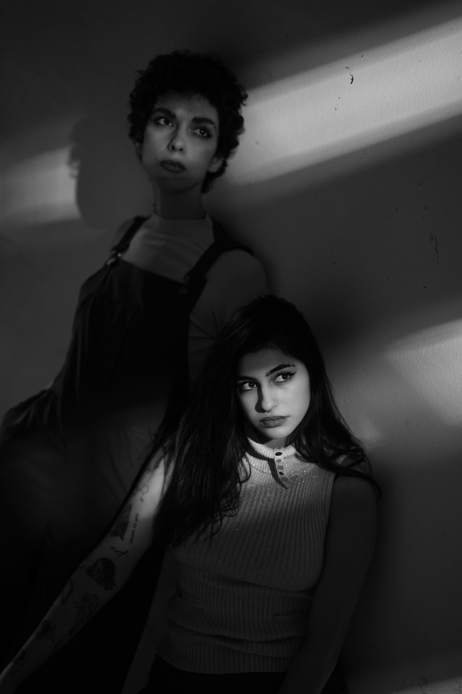

Chi siamo
@studio.ortica

Ecco le
fondatrici
Marta e Ilaria
Dal 2019
Siamo uno studio di marketing che aiuta le piccole attività a farsi vedere con chiarezza e costanza. Dal marchio ai contenuti, facciamo lavorare la vostra presenza online.